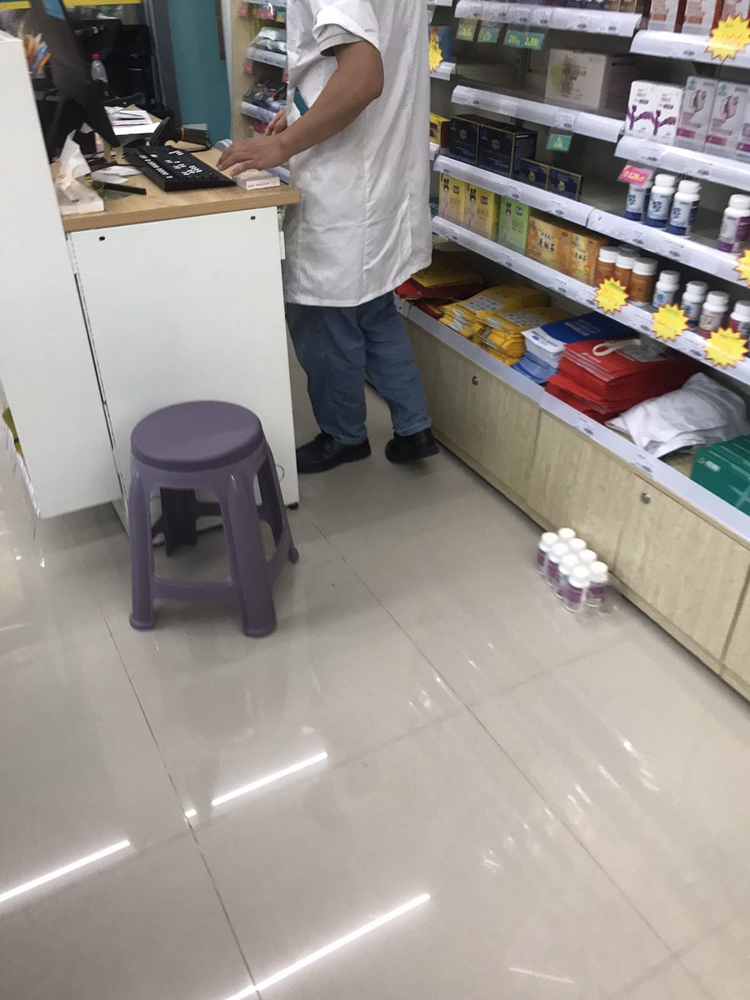
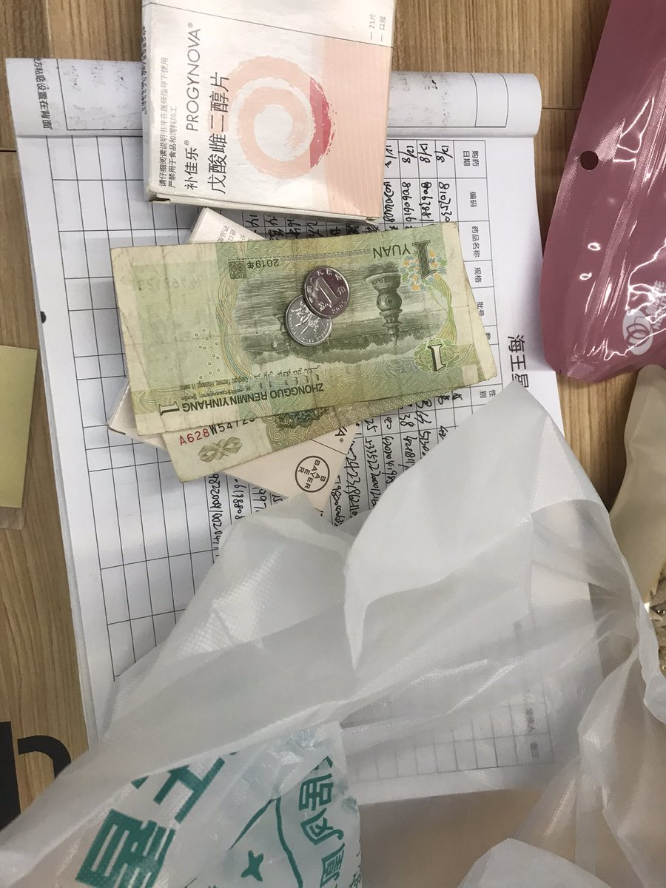

Murong
@Murong_WangKezi
@y4006948 欸？我们家楼下药店也能买到哦，不过38一盒太贵了喵


(ᇂ_ᇂ|||)🍥
@y4006948
勇闯线下药店买到的一盒雌二醇（
进药店后不理导购员，径直走向处方药区，找到补佳乐，和店员说拿一盒这个就行
事实证明店员和医生不一样，根本不懂这是啥，只知道这是处方药要登记一下信息，然后给钱就把药给我了
不过另一个女店员在我买的时候好像一直在旁边憋笑？可能她知道，不过也没说什么😋 https://t.co/yYlcfEOBfR